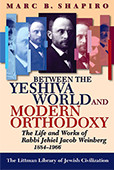

The Limits of Orthodox Theology
Maimonides' Thirteen Principles Reappraised
This book takes issue with the widespread assumption that Maimonides' famous Thirteen Principles are the last word in Orthodox Jewish theology. The author shows that numerous traditional theologians in the last 900 years have in fact taken issue with Maimonides' principles, both in their details as well as with regard to certain fundamental points in Maimonides¹ formulation.
More info
'His research is exhaustive, almost encyclopedic, and it is highly convincing . . . his aim is truly constructive and his tone is passionately concerned.'
Erin Leib, Jerusalem Report
'Combines remarkable erudition with clarity of vision.'
Menachem Kellner, Edah Journal
'Inspiring and breath-taking . . . highly recommended.'
Yisrael Dubitsky, Association of Jewish Libraries Newsletter
'This exhaustive yet readable study . . . is astonishingly well researched . . . a polemical work of considerable erudition, which will find a broad audience.'
Harvey Belovski, Jewish Chronicle
It is commonly asserted that Maimonides' famous Thirteen Principles are the last word in Orthodox Jewish theology. This is a very popular notion, and is often repeated by scholars from all camps in Judaism. Yet such a position ignores the long history of Jewish theology in which Maimonides' principles have been subject to great dispute.
The book begins with a discussion of the significance of the principles and illustrates how they assumed such a central place in traditional Judaism. Each of the principles is then considered in turn; the reasons underlying Maimonides' formulation are expounded and the disputes that have arisen concerning them are discussed in detail. Marc B. Shapiro's authoritative analysis makes it quite clear that the notion that Maimonides¹ principles are the last word in traditional Jewish theology is a misconception, and that even Maimonides himself was not fully convinced of every aspect of his formulation.
Although structured around Maimonides' principles, the book can also be seen as an encyclopedia of traditional Jewish thought concerning the central issues of Jewish theology. The diversity of opinion in Jewish tradition on such issues as God, Creation, and the Revelation of the Torah are sure to surprise readers.
About the author
Marc B. Shapiro holds the Harry and Jeanette Weinberg Chair in Judaic Studies at the University of Scranton, Pennsylvania. A graduate of Brandeis and Harvard universities, he is the author of Between the Yeshiva World and Modern Orthodoxy: The Life and Works of Rabbi Jehiel Jacob Weinberg, 1884-1966 (1999) and and Changing the Immutable: How Orthodox Judaism Rewrites Its History (forthcoming 2014), both published by the Littman Library.
Contents
Preface
1 Introduction
2 The Existence and Unity of God
3 The Incorporeality of God
4 Creation Ex Nihilo
5 Only God is to be Worshipped
6 Prophecy and the Significance of Moses
7 Revelation of the Torah
8 Eternity of the Torah
9 God’s Knowledge, Reward and Punishment
10 The Messiah, Resurrection of the Dead
Conclusion
Appendix
Bibliography
Index
Reviews
'Marc Shapiro puts an explicit contemporary context on this remarkable collection of sources that disagreed with one part or other of Maimonides* Thirteen Principles . . . By showing the extent to which past authors disagreed with those Principles, Shapiro seeks to debunk assertions by contemporary writers that place those Principles at the core of Orthodox belief . . . the work is astonishing in its rage. Shapiro uses his daunting biographical abilities and his considerable skill as a writer to present his material‹well-known and obscure‹cogently and entertainingly. To the reader interested in the limits of the theological imagination of Jews, it is not likely to be soon rivalled.'
Gidon Rothstein, AJS Review
'Inspiring and breath-taking . . . highly recommended.'
Yisrael Dubitsky, Association of Jewish Libraries Newsletter
'A courageous and meticulously research book that straddles two worlds‹that of abstract scholarship and of practical religious vision . . . The real tour de force of the book is the enormous amount of material he musters to make his case.'
Bradley Shavit Artson, Conservative Judaism
'Combines remarkable erudition with clarity of vision.'
Menachem Kellner, Edah Journal
'His research is exhaustive, almost encyclopedic, and it is highly convincing . . . his aim is truly constructive and his tone is passionately concerned.'
Erin Leib, Jerusalem Report
'This exhaustive yet readable study . . . is astonishingly well researched . . . a polemical work of considerable erudition, which will find a broad audience.'
Harvey Belovski, Jewish Chronicle
'Ground-breaking . . . As Shapiro so clearly demonstrates in this landmark work, the need is not only for theological discussions, but for theology.'
Miriam Shaviv, Jewish Quarterly
'Shapiro's book is doubly remarkable: it is at the same time a commentary on Maimonides' Thirteen Principles, and a successful summary of the central themes of Jewish theology, offering deep insight into what the blurb calls "traditional Jewish thought".'
Stefan Schreiner, Judaica
'Articulate and thought-provoking . . . This book is no less important on social than on scholarly grounds. Shapiro presents his stance with great passion, giving readers the sense that he is involved in a truth spreading mission. His passion appears to me justified and legitimate, since abstract theology is indeed an essential element in the shaping of current Orthodox society, particularly in Israel but also outside it. In sum: this book provides scholars with a justification for a view that most of them had already sensed and accepted and opens up to a broader intellectual public a path to understanding Jewish philosophy.'
Dov Schwartz, Review of Rabbinic Judaism
232 pages
ISBN: 978-1-874774-90-7 hardback out of print
978-1-906764-23-4 paperback
£16.95 / $27.95 paperback
Hardback publication January 2004
Paperback 25 August 2011
Other books by this author:

Between the Yeshiva World and Modern Orthodoxy
The Life and Works of Rabbi Jehiel Jacob Weinberg, 1884-1966

Changing the Immutable
How Orthodox Judaism Rewrites Its History